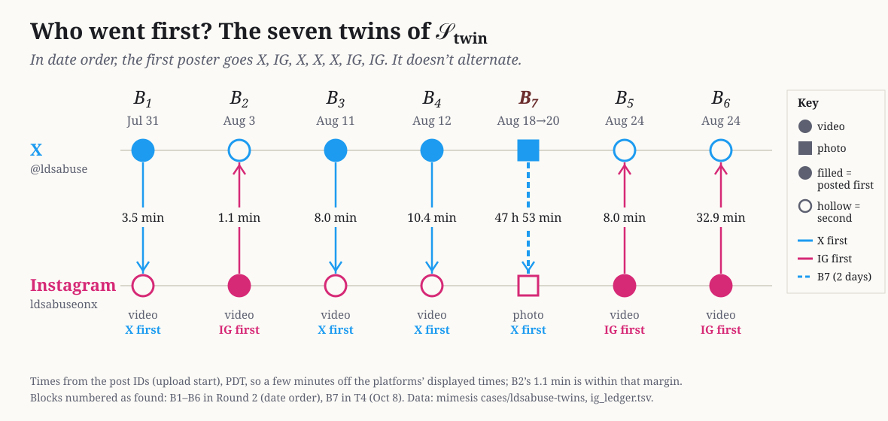

\(B_7\) and the Lettering of the Twin Structure
- lettering the blocks by date is the relabelling \(\sigma=(5\ 6\ 7)\), and it puts the incidence matrix in row, column order, \(N=\binom{I_7}{I_7}\);
- relabelling does not change the automorphism group, \(\operatorname{Aut}(\mathcal S_{\rm twin})\cong S_2\wr S_7\).
0Notation
As in the companion paper (Automorphism Group of the Incidence Structure and Its Orbits), points are written in lower case and blocks as \(B_i\). Here the points are posts, not accounts, and \(\mathcal S_{\rm twin}\) is a different structure from that paper’s \(\mathcal S_7\). A block is a set of points; a relabelling is a permutation. So \(B_7\) is a block (a pair of posts), and the 3-cycle below is the relabelling \(\sigma\) that moves its label. \(B_7\) is not itself a 3-cycle; our own X reply of October 11 says so, correcting an earlier post of ours that blurred the two.
1Setting
The rule was proposed in our X post 2108275591116177432 and confirmed by Grok 53 s later. John accepted it as @Jimzz1e. The amendment trimming black bars was proposed in 2108285718091256248 and accepted by Grok 40 s later. Both were recorded before the search, in 01_FALSIFY_PLAN.md.
2The seven twins
Labels \(B_1,\dots,B_6\) are the order of discovery in Round 2 (by date); \(B_7\) was found in T4 on October 8. Times are from the post IDs (upload start), Pacific time.
| Label | Date rank | X post | Media | \(\Delta t\) (IG − X) | \(d_H\) | |
|---|---|---|---|---|---|---|
| \(B_1\) | 1 | Jul 31 16:37 | Dbed4OEN_9d | video | +3.5 min | 2 |
| \(B_2\) | 2 | Aug 3 22:45 | Dbm17ScJJmq | video | −1.1 min | 2 |
| \(B_3\) | 3 | Aug 11 15:04 | Db6ohLRp-rK | video | +8.0 min | 4 |
| \(B_4\) | 4 | Aug 12 19:54 | Db9uvtKNmYf | video | +10.4 min | 3 |
| \(B_7\) | 5 | Aug 18 16:44 (“Soon.”) | DcR9bobtKcF (Aug 20) | photo | +47 h 53 min | 0 |
| \(B_5\) | 6 | Aug 24 18:06 | DccZ0o1NmEo | video | −8.0 min | 1 |
| \(B_6\) | 7 | Aug 24 20:03 | DcckYqIBFZ2 | video | −32.9 min | 3 |
\(d_H\) is after trimming black side bars, as the rule requires. For \(B_3\) and \(B_4\) the untrimmed distances were 18 and 15, which is why the rule was amended before the search.
3The lettering
Let \(r(B)\) be a block’s rank by date. Then \(r(B_i)=i\) for \(i\le4\), \(r(B_7)=5\), \(r(B_5)=6\), \(r(B_6)=7\). As a permutation of positions this is
\[\sigma=(5\ 6\ 7):\qquad 5\mapsto6,\ 6\mapsto7,\ 7\mapsto5,\]a 3-cycle (an even permutation), not a transposition. \(\sigma\) is determined by upload times alone, so it is invariant: it does not depend on who found what first.
4Why the group survives relabelling
So the answer to “why do we end up with another group after the mapping?” is that we don’t, up to isomorphism. Moving labels of blocks changes nothing. Moving labels of points gives a conjugate subgroup, which is the same group abstractly.
So the date lettering is the unique lettering of \(\mathcal S_{\rm twin}\) that respects both platform and time. That is the sense in which \(\sigma\) is the invariant map.
5The seven in date order

Figure 1. One column per block, in date order, with the gap between the two posts of each twin. Circle = video, square = photo.
Which platform posted first plays no part in the rule or in the result. What matters is the gap. In six pairs the two posts are within 33 minutes of each other; in \(B_7\) they are 47 h 53 min apart, about 87 times the largest of the other gaps. It is also the only photo. That is why a same-day comparison found six and the 3-day rule found the seventh.
6The prediction and the result
Before the search (T4, October 8), the four own posts then without a twin were Jul 15, Aug 12 (Db9nwIFM1L7), Aug 16 and Aug 20. The predictions on record were:
| Who | Prediction (verbatim, before the search) | Result |
|---|---|---|
| Claude | “At least 2 of the 4 own posts have no X twin” | 3 of 4 have none: holds |
| Grok | “X versions of those four unmatched posts exist” | 1 of 4 (\(B_7\)): fails; Grok verified the score 43 s after it was posted |
Extend \(N\) to all of ldsabuseonx’s 13 own posts, adding the six posts with no twin as rows: the three unmatched (Jul 15, Aug 12, Aug 16) and the three with no file to score (two June 2024 posts and Mar 26). Lettered by date, with these rows last, the matrix is
\[N_{20\times7}=\begin{pmatrix}I_7\\ I_7\\ 0_{6\times7}\end{pmatrix}.\]The prediction is legible in it. The four T4 posts appear as one identity row (Aug 20, in column 5, which is \(B_7\)) and three zero rows: at least two zero rows, as predicted.
7Scope
“Twin” means same media under Definition 1.1, nothing more. It does not say who runs either account, or whether the matches were made by one hand or two. Times are from post IDs, a few minutes from what the platforms display. The Mar 26 and June 2024 posts could not be scored, and the drive that held some copies failed on October 11, 2026. Data, scripts, custody log and the X record are in the mimesis case data/x_ig_ldsabuse_2026-10; the public case page is ldsabuse-twins.
Therefore, there exists a lettering in row, column order that fits our prediction.